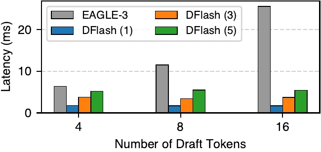
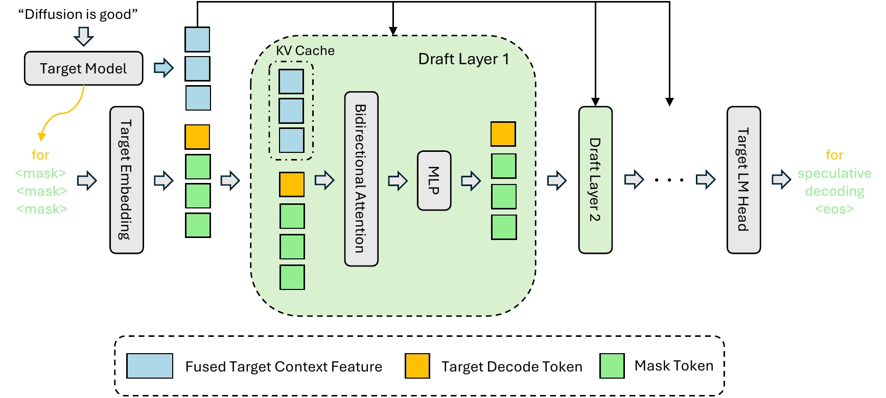
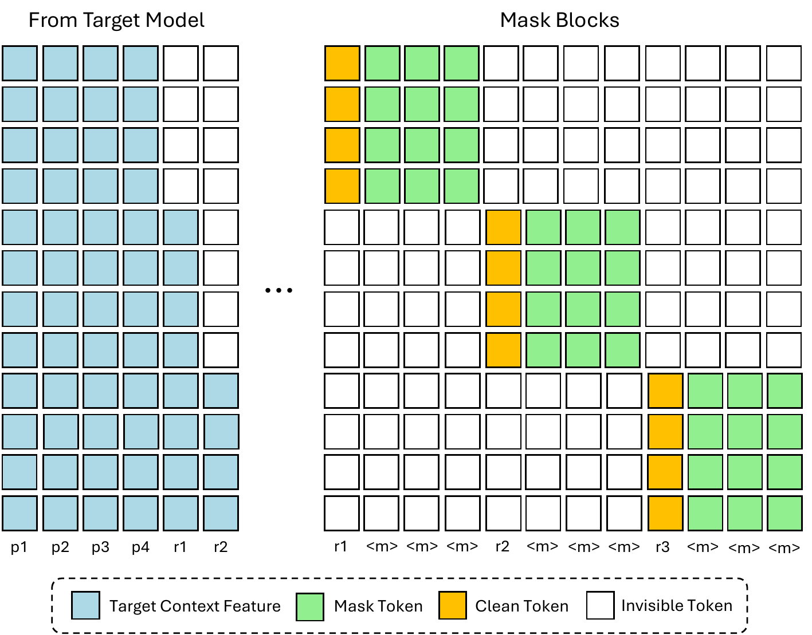
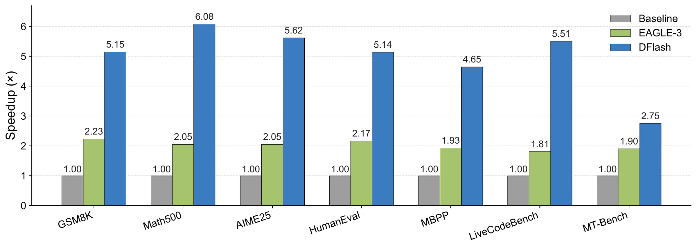

论文：DFlash: Block Diffusion for Flash Speculative Decoding
作者：Jian Chen, Yesheng Liang, Zhijian Liu（UC San Diego，Z Lab）
会议：International Conference on Machine Learning（ICML 2026，accepted）
版本：arXiv:2602.06036v2（2026-05-28 修订），TeX 源码固定
代码：https://github.com/z-lab/dflash 模型：https://hf.co/collections/z-lab/dflash
主要依据：v2 TeX 全文（sections/abstract、intro、preliminaries、method、experiments、appendix）与 Inco AI 官方博客（DFlash 2 发布，2026-08-18） 对其衍生生态的描述。论断编号见文末来源与范围说明。
投机解码让大模型一次前向验证一整段草稿，绕开了逐 token 生成的内存带宽限制。但草稿本身还是逐 token 串行写的——起草环节重新引入了它要消除的串行性，先进方法（如 EAGLE-3）也只能把加速压到 2–3 倍[C1]。DFlash（ICML 2026）的回答是：把草稿器换成块扩散模型——一次前向并行写完一整块。配合以目标模型隐藏特征为条件的 KV 注入，它在 Qwen3-8B 上拿到 6.1$\times$ 无损加速、相对 EAGLE-3 高 2.5$\times$（论文 headline；按 Tab. 1 各行折算 2.4–2.8$\times$）[C1]。
前置概念——投机解码循环、注意力中的 K/V、块扩散范式、EAGLE-3 的特征级自回归起草——结论已在对应链接页给出，此处直接引用。
自回归起草的瓶颈在哪——为什么现有方法加速被卡住？
每 token 平均延迟 $L=(T_{\text{draft}}+T_{\text{verify}})/\tau$ [F1]：加速要么把 $\tau$ 拉高，要么把 $T_{\text{draft}}$ 压低。自回归起草 $T_{\text{draft}}=\gamma\cdot t_{\text{step}}$ [F2] 随草稿长度 $\gamma$ 线性增长，迫使草稿器极浅（EAGLE-3 仅 1 层 transformer），容量不足导致 $\tau$ 随 $\gamma$ 快速饱和，实际加速被压在 2–3$\times$ [C1]。扩散起草 $T_{\text{draft}}=t_{\text{parallel}}$ [F3] 不随块大小线性增长（见块扩散页），是打破这一两难的结构性杠杆。完整论证见「1. 起草为什么慢——串行成本与浅层天花板」。
DFlash 推理管线怎么运作——target 隐藏特征怎么进 draft，KV 注入和单步并行起草各起什么作用？
prefill 阶段从 target 均匀采 5 层隐藏态，拼接后过共享投影 $W_c$ 融合为目标上下文特征 $H_t=\mathrm{RMSNorm}(W_c[H^{(l_1)};\ldots;H^{(l_5)}])$ [F4]；第 $i$ 层 draft 注意力把 $H_t$ 的 K/V 投影与 draft token 的 K/V 拼接：$K_i=[W_i^K H_t;W_i^K H_d]_{\mathrm{seq}}$，$V_i$ 同理[F5]。draft 用块扩散模型以单步方式一次前向并行预测整块所有位置[C6]，配合 target 的特征条件，实现比 EAGLE-3（输入融合）随层数扩展的接受长度[C4, N7]。详见「2. 推理管线——KV 注入与单步并行起草」。
训练怎么对齐推理行为？
四项设计共同让 draft 的训练分布与推理分布一致：①anchor 随机采样构块——每个 anchor 作块首、其后 block_size−1 位置遮住并行预测[C7]，匹配推理时「以上一周期产出的干净 token 为条件」的行为，同时作为数据增广；②稀疏掩码块间禁止注意，多块拼成单序列用 Flex Attention 一次前向反向训[C8]；③块内位置 $k$ 损失权重 $w_k=\exp(-(k-1)/\gamma_w)$ [F6]，因为早期位置错则整块作废[C9]；④与 target 共享并冻结 token embedding 和 LM head，draft 只更新 transformer 层[C10]。详见「3. 训练——让 draft 的课堂就是考场」。
加速到底多少、在什么条件下？
Transformers 后端 Qwen3-4B/8B、T=0、thinking 关闭、平均 4.91$\times$/4.86$\times$（最高 6.09$\times$，Math500 Q3-4B），对 EAGLE-3(16) 高 2.4–2.8$\times$ [N1]；T=1 平均 4.24$\times$/4.03$\times$ [N2]；思考模式 4.5$\times$/3.9$\times$ [N3]。SGLang B200 + FA4 + Spec-v2 最高 5.1$\times$（Qwen3-8B Math500 并发 1）[N4]。vLLM Qwen3.5-9B 并发 1 为 3.0–4.6$\times$（MT-Bench 3.0$\times$），并发 32 缩到 1.3–2.1$\times$ [N5]。条件：单卡 H200/B200、batch 与并发、采样参数。详见「4. 实验——三个后端上的数字与条件」。
方法的边界在哪——收益何时缩水、与 EAGLE-3 的差距是否普适、部署要注意什么？
边界由多组消融共同支撑：MT-Bench（对话类）一致最低（T=0 仅 2.75–2.85$\times$）[N1]；高并发收益缩水但仍为正（并发 32 SGLang 仍 2.2–3.1$\times$，其中数学任务 2.8–2.9$\times$；vLLM MT-Bench 1.3$\times$）[N4, N5]；训练块大小与推理块大小需匹配，b16 训练可向下泛化到 b8，反向不成立[C13]；长上下文（>4K）需 1.6K 样本轻量微调恢复接受长度[N13]；无 target 特征条件时纯块扩散草稿只剩 2–3$\times$ 加速[C5, N11]，证明 KV 注入是主要收益来源；实验均在单卡 H200/B200。详见「5. 方法评价——收益边界与适用判断」。
投机解码的延迟账写在一行[F1]：
$$L=\frac{T_{\text{draft}}+T_{\text{verify}}}{\tau},\qquad \tau\in[1,\gamma+1].$$加速比 $\eta=L_{\text{target}}/L$ 由两条路决定：拉高 $\tau$（草稿更准），或压低 $T_{\text{draft}}$（起草更快）。两件事要兼顾，但自回归起草把它们推到了对立面——起草成本随草稿长度线性增长[F2]：
$$T_{\text{draft}}=\gamma\cdot t_{\text{step}}.$$为了把 $T_{\text{draft}}$ 压在可接受范围，草稿器必须极浅：EAGLE-3 只有 1 层 transformer，参数与容量都受限。浅模型在 $\gamma$ 较大时 $\tau$ 很快饱和（多猜的 token 几乎都不被接受），于是 $\eta$ 撞上 2–3$\times$ 的天花板[C1]。这就是为什么自回归草稿器一直跑不出更快的成绩：起草的串行性是结构性的，不是某个模型的工程问题。
DFlash 用块扩散草稿器打破这层天花板[F3]：
$$T_{\text{draft}}=t_{\text{parallel}},\qquad t_{\text{parallel}}\ll\gamma\cdot t_{\text{step}}.$$块扩散一次前向并行预测整块所有位置，$t_{\text{parallel}}$ 与块大小基本无关（见块扩散第 2 章）。下图是论文 Figure 3 给出的一组实测对比：横轴是每周期草稿 token 数 4/8/16，纵轴是起草延迟（毫秒）。EAGLE-3 的 1 层草稿延迟随 token 数线性增长，3 层/5 层 DFlash（5 层深度、单次前向、并行起草整块）几乎与 token 数无关[N10]。

这里的关键不是「DFlash 比 EAGLE-3 数字大多少」，而是「起草成本不再随 token 数线性增长」这件事——它把「拉高 $\tau$」和「压低 $T_{\text{draft}}$」从对立变成同向：可以放心加层、加深网络，$\tau$ 与 $T_{\text{draft}}$ 的关系被切断了（这是第 2 章 KV 注入要接住的条件）。
构造示例（数字为人为构造）。一次 draft-verify 周期：起草耗时 $T_{\text{draft}}=3$ ms、验证耗时 $T_{\text{verify}}=10$ ms、$\tau=4$（即接受了 3 个草稿 + 1 个目标补正/bonus），由 F1 算得 $L=(3+10)/4=3.25$ ms/token；自回归基线 $L_{\text{target}}=10$ ms/token，加速比 $\eta\approx 3.08\times$。这个 $\tau=4$ 来自草稿块中被接受的 3 个 token，加上目标模型多出的 1 个 bonus token；实际 $\tau$ 取决于模型、任务、采样温度（见第 4 章的实测数字）。构造示例的延迟数字用于演示 F1 的算账结构，不代表任何实测环境的真实延迟。
每 token 延迟由什么构成？加速的两个杠杆是什么？
由 F1：每 token 平均延迟 $L=(T_{\text{draft}}+T_{\text{verify}})/\tau$[F1]，$\tau$ 是每轮期望接受数（含验证时产出的 bonus 或修正 token）。加速比 $\eta=L_{\text{target}}/L$，可通过提高 $\tau$（草稿更准）或压低 $T_{\text{draft}}$（起草更快）实现，两条路对自回归起草对立（详见本章正文）。
自回归起草的成本怎么随草稿长度增长？为什么迫使草稿器极浅、$\tau$ 饱和？
F2：$T_{\text{draft}}=\gamma\cdot t_{\text{step}}$[F2]。多猜一个 token 就多一次串行前向；为了把 $T_{\text{draft}}$ 压在可接受范围，草稿器必须极浅（EAGLE-3 仅 1 层 transformer）。浅模型容量不足，$\tau$ 随 $\gamma$ 快速饱和，加速比被压在 2–3$\times$ [C1]。DFlash 用块扩散的 $T_{\text{draft}}=t_{\text{parallel}}$ [F3] 打破线性，5 层 DFlash 起草 16 token 的延迟低于 EAGLE-3 单层起草 8 token [N10]。
第 1 章解释了「为什么需要并行起草」，这一章解释 DFlash 怎么实现它。整条管线分四步：
F4 说明 target 特征的融合方式：
$$H_t=\mathrm{RMSNorm}\!\left(W_c\!\left[H^{(l_1)};\ldots;H^{(l_5)}\right]\right).$$融合结果 $H_t$ 是「target 模型对该位置上下文（包含未来 token 信息[C2]）的压缩表示」，被所有 draft 层复用。
F5 说明 $H_t$ 进入 draft 注意力 K/V 的方式：
$$\begin{aligned} Q_i &= W_i^Q H_d, \\ K_i &= \left[W_i^K H_t;\ W_i^K H_d\right]_{\mathrm{seq}}, \\ V_i &= \left[W_i^V H_t;\ W_i^V H_d\right]_{\mathrm{seq}}. \end{aligned}$$为什么注入 K/V 而不是「拼在输入」？EAGLE-3 把 target 特征与 draft 的 token embedding 拼起来只作为 draft 的输入，每层只看一次[C4]。随 draft 加深，输入层注入的信息会被各层 transformer 块持续冲淡，$\tau$ 随层数增加几乎不增长——这是 EAGLE-3 浅到 1 层的部分原因。DFlash 把 target 特征注入每一层的 K/V，相当于在每一层都给 draft 一次「来自 target 的注意力上下文」，条件强度不随层数衰减——消融表显示这让 $\tau$ 随 draft 层数增加持续提升[C4, N8]。
单步并行起草意味着什么？块扩散模型本来是「一块内多轮去噪」的范式（见块扩散第 4 章），DFlash 把去噪轮数取 1——所有被遮位置一次前向直接预测[C6]。相对自回归起草（每 token 一次串行前向）和块扩散多轮（每轮一次串行前向），单步并行的每周期成本最低。代价是块内没有多轮去噪修正、无法互相校正（位置之间仍可按双向注意互相看到）——但作为草稿器，错误草稿被目标模型验证拒绝（详见第 5 章评价）。
论文 Figure 2 把整条管线画在同一张图上：target 模型的隐藏态变成「Fused Target Context Feature」（蓝色），与 draft token 的 mask 嵌入一起进入 Draft Layer 1 的双向注意力，再经过 Draft Layer 2、…、Target LM Head，产出「<eos>」或草稿 token。

KV 注入的工程开销几乎可忽略。$W_c$ 是新增的「唯一参数化组件」，$D\times 5D$ 维（约 $5D^2$ 个参数），Qwen3.5-35B-A3B（$D=2048$、BF16）约 42 MB[C11, N12]，相对 70 GB 量级的目标模型可以忽略；激活方面 batch 1、序列 2048 时投影输入/输出约 40 MB/8 MB，块 16 解码时临时激活 <400 KB[N12]。
去掉 target 特征会发生什么？消融表给了直接答案：5 层纯块扩散草稿器（无 KV 注入）在 GSM8K 上加速 2.83$\times$、Math500 3.73$\times$、AIME24 3.43$\times$、AIME25 3.35$\times$（T=0）[C5, N11]——与论文所述自回归方法 2–3$\times$ 的天花板同档（分析性推断）。说明「并行起草」本身不带来显著收益，KV 注入才是 4–6$\times$ 的来源。这条负结果是 DFlash 设计的关键证据。
F5 里 target 特征只进入 $K_i,V_i$，不进 $Q_i$、不过自注意更新、不过 FFN[F5]。这意味着 target 特征在每一层注意力里以「被查询但不被更新」的方式存在：它持续给 draft 注意力提供 target 视角的上下文，但不会污染 draft 自身隐藏态的演化轨迹。论文附录 A.3 明确说「They bypass the draft model's $Q$ projection, output projection, self-attention update, and FFN」。代价是 target 特征不能直接构造 draft 的新 query。这条边界在「KV 注入 vs 输入融合」的消融里得到支持：KV 注入在所有任务上都优于输入融合[N7]。
target 的隐藏特征怎么进 draft？为什么注入 K/V 而不是拼在输入？
prefill 时从 target 第 2 层到倒数第 3 层均匀采 5 层隐藏态[C3]，按位置拼接后过共享投影 $W_c$ 得目标上下文特征 $H_t=\mathrm{RMSNorm}(W_c[H^{(l_1)};\ldots;H^{(l_5)}])$[F4]。第 $i$ 层 draft 注意力把 $H_t$ 的 K/V 投影与 draft token 的 K/V 在序列维度上拼接[F5]，$H_t$ 只作 KV 条目（绕过 $Q$ 投影、输出投影、自注意更新、FFN[F5]）。对比：EAGLE-3 把 target 特征与 token embedding 拼接后只喂给 draft 输入层[C4]，加层时信息被各层 transformer 块冲淡，$\tau$ 几乎不增长；KV 注入逐层提供注意力上下文，$\tau$ 随层数增加持续提升[C4, N8]。
一次 draft-verify 周期的完整数据流是什么？
四步：①target prefill 阶段均匀采 5 层隐藏态[C3]；②拼接过共享 $W_c$ 融合为 $H_t$ [F4]；③$H_t$ 的 K/V 投影注入 draft 每层注意力[F5]，存进 draft 自己的 KV cache；④draft 以单步块扩散一次前向并行预测整块所有被遮位置[C6]，target 一次前向验证整块。KV cache 中 $H_t$ 的 K/V 跨起草周期复用，target 只需在 prefill 抽一次特征。一个周期的总成本是 1 次 draft 前向 + 1 次 target 前向。论文 Figure 2 给出整条管线的视觉示意（见上图）。
DFlash 推理侧是「单步并行 + KV 注入」，但训练侧不能照搬：标准块扩散训练把所有块均匀切好、每块内随机遮一些位置预测剩余，预测时各块并行计算。DFlash 改了四处，让 draft 的训练分布尽量与推理时一致：
推理时每个草稿块的条件是「上一周期目标模型产出的那个干净 token」（bonus 或修正）。标准块扩散训练把 response 均匀切块、块内被遮位置随机，块首并不保证是干净 token——训练条件与推理时「以模型产出的干净 token 为条件」的行为不匹配。DFlash 的做法是从 response 中随机采样 anchor token，每个 anchor 作为块首、其后 block_size−1 位置遮住并行预测[C7]。
这样做的两个好处：①匹配推理时「以模型产出 token 为条件」的行为；②随机化 anchor 位置提供数据增广——同一序列可以用不同 anchor 切成多组训练块，提高数据效率。消融表 Tab. 13 验证了这一点：anchor 采样（Sample）对比标准均匀分块（Standard），Math500 上 $\tau$ 5.64 vs 4.94、HumanEval 4.61 vs 3.86、MT-Bench 3.18 vs 2.80[C7]。
标准块扩散训练需要把每个块分别过模型至少两次（一次带噪算损失、一次干净供后续块做条件，见块扩散第 2 章）。DFlash 进一步把所有块拼成一条长序列，用 block 间禁止注意的稀疏掩码（块内双向、块间不可见），配合 Flex Attention 一次前向反向训多个块[C8]。论文 Figure 4 把这块稀疏掩码画出来：

投机解码里不同位置的 token 不等权重：一个草稿块里位置 1 错了，整个块就作废；位置 4 错了，前面 3 个还能被接受。DFlash 对块内早期位置加更多损失权重[C9]，公式为：
$$w_k=\exp\!\left(-\frac{k-1}{\gamma_w}\right),$$$k=1$ 时 $w_1=1$（最重），$k$ 每增大 1 权重按指数衰减。论文 Figure 5（`acceptance_length_vs_epoch`）显示带 loss decay 的训练收敛更快、最终接受长度更高[C9]。
| 块内位置 $k$ | 1 | 2 | 3 | 4 | 5 | 6 | 7 | 8 | 9 | 10 | 11 | 12 | 13 | 14 | 15 | 16 |
|---|---|---|---|---|---|---|---|---|---|---|---|---|---|---|---|---|
| $w_k$ | 1.000 | 0.867 | 0.751 | 0.651 | 0.565 | 0.490 | 0.424 | 0.368 | 0.319 | 0.276 | 0.240 | 0.208 | 0.180 | 0.156 | 0.135 | 0.117 |
位置 1 的权重是位置 16 的约 8.5 倍。手算可复算：$w_k=\exp(-(k-1)/7)$（表中数值四舍五入到三位小数）。该表用于直观理解各位置的不等权重设计，不属于实测数字。
token embedding（把 token id 映成 $D$ 维向量）和 LM head（把 $D$ 维隐藏态映成词表大小 logits）通常是大模型参数的两个大头。DFlash 让 draft 与 target 共享这两个组件并在训练中冻结——draft 只更新 transformer 层[C10]。好处：①大幅减少可训练参数；②draft 的「词表空间」与 target 严格对齐，避免 draft 学的 token 表示与 target 冲突；③把 draft 训练为「target 表示空间里的轻量适配器」——这与论文 Conclusion 的定位「扩散模型可作为轻量、专用的草稿器」一致。
训练数据为 800K 样本（Nemotron Post-Training Dataset V2 + CodeAlpaca，response 由 target 自己生成而非数据集原文）[N15]，见论文 §5 Datasets。训练细节见 Appendix A.1[N9]：6 epochs、AdamW、lr $6\times10^{-4}$、梯度裁剪 1.0、cosine 调度、warmup 0.04、最长序列 3072（Qwen3-Coder 为 4096）、每序列采 512 个 anchor。loss decay $\gamma_w$：块 16 取 7、块 10 取 5、块 8 取 4[N9]。
训练支持 online 与 offline 两种模式：online 是训练时每步重新算 target 隐藏态；offline 预先把 target 隐藏态缓存到磁盘，训练时直接加载——大幅减少计算开销，对更大规模数据更友好[N9]。
训练构块怎么对齐「以已验证干净 token 为条件」的推理行为？
DFlash 从 response 中随机采样 anchor 作块首，遮住其后 block_size−1 位置作为 mask token 供并行预测[C7]。这与推理时「上一周期目标模型产出（修正或 bonus）作为下一块锚点」的行为一致；随机化 anchor 同时提供数据增广。消融（Tab. 13）显示 anchor 采样相对标准均匀分块在 Math500 上 $\tau$ 5.64 vs 4.94、HumanEval 4.61 vs 3.86、MT-Bench 3.18 vs 2.80[C7]。
四项训练设计各自解决什么？
①anchor 采样构块（C7）——对齐推理时的「以干净 token 为条件」行为 + 数据增广。②稀疏掩码（C8）——所有块拼成单序列、块间禁止注意、Flex Attention 一次前向训多块，减少训练成本。③loss decay（F6 / C9）——$w_k=\exp(-(k-1)/\gamma_w)$ 强调早期位置，因为位置 1 错整块作废。④共享冻结 embedding/LM head（C10）——draft 只更新 transformer 层，可训练参数显著减少，draft 表达空间与 target 严格对齐。
论文把实验分五块：Instruct 模型主结果、Reasoning 模型、Serving 框架（SGLang）、Long Context Adaptation、Ablation（5.5 含 LLaMA 同数据对照）。所有数字都带条件：哪个模型、什么后端、什么采样温度、thinking 模式开关、最大生成长度、并发数——离开了这些，加速比的「$\times$N」基本没有可比性。
下表是 Qwen3-4B/8B、thinking 关闭、最多 2048 新 token、DFlash 块 16（EAGLE-3 树大小 16 与 60 分别列）、Transformers 后端[N1, N2] 的平均加速与对应 $\tau$（每轮期望接受数）。完整逐基准数字见论文 Tab. 1。
| 模型 | 采样温度 | DFlash (块 16) | EAGLE-3 (树 16) | EAGLE-3 (树 60) | DFlash 对 EAGLE-3(16) 提升 （本表平均加速比之比） |
|---|---|---|---|---|---|
| Qwen3-4B | T=0（greedy） | 4.91$\times$ ($\tau$ 6.54) | 1.81$\times$ ($\tau$ 3.05) | 2.08$\times$ ($\tau$ 3.48) | 2.7$\times$ |
| T=1 | 4.24$\times$ ($\tau$ 5.69) | 1.72$\times$ ($\tau$ 2.95) | 1.93$\times$ ($\tau$ 3.36) | 2.5$\times$ | |
| Qwen3-8B | T=0 | 4.86$\times$ ($\tau$ 6.49) | 1.76$\times$ ($\tau$ 2.96) | 2.02$\times$ ($\tau$ 3.40) | 2.8$\times$ |
| T=1 | 4.03$\times$ ($\tau$ 5.48) | 1.68$\times$ ($\tau$ 2.83) | 1.88$\times$ ($\tau$ 3.26) | 2.4$\times$ |
逐基准最高加速 6.09$\times$（Qwen3-4B Math500、T=0）[N1]。对 EAGLE-3(16) 的提升按本表各行折算为 2.4–2.8$\times$——该列为本表 DFlash 与 EAGLE-3(16) 平均加速比之比；论文 §5.1 正文自述值为 T=0 2.4$\times$、T=1 2.2$\times$（论文未说明其计算方式），headline 数字为相对 EAGLE-3 高 2.5$\times$。下图是论文 Figure 1 的逐基准可视化（Qwen3-8B T=0，DFlash 在所有任务上都超过 EAGLE-3）：

对话类任务（MT-Bench）一致最低是稳定趋势：T=0 2.75–2.85$\times$、T=1 2.47–2.67$\times$[N1, N2]。论文未明确归因，但 MT-Bench 是开放聊天、输出分布更宽、结构化程度低——这与「草稿器在结构化/约束输出上收益最大」的直觉一致（见第 5 章评价）。
推理模型（Qwen3 thinking 模式开启）草稿器用「包含思考链的 response」训练，主表 Tab. 2[N3]：T=0 平均约 4.4$\times$、T=1 平均约 3.8$\times$（论文 §5.2 概述为「roughly 4.5$\times$ and 3.9$\times$」）。低于非 thinking 模式的 4.91$\times$/4.86$\times$ —— 思考链中多步推理/公式化表达对草稿器更不友好[C16]（分析性推断），但仍具长 CoT 部署价值。
论文把 DFlash 接到 SGLang 上跑，启用 SGLang 的 Spec-v2 引擎（重叠调度），单卡 NVIDIA B200，FlashAttention-4 后端[C14]。下表是 Qwen3-4B/8B + Qwen3-Coder-30B-A3B 在并发 1/4/8/16/32 的吞吐（绝对 tok/s 与相对基线倍数）[N4]。
| 模型 / 任务 | 基线 tok/s（并发 1） | DFlash 加速（conc 1） | DFlash 加速（conc 32） | 平均 $\tau$ |
|---|---|---|---|---|
| Qwen3-4B / Math500 | 316 | 4.8$\times$ | 2.9$\times$ | 8.01 |
| Qwen3-4B / HumanEval | 312 | 4.0$\times$ | 2.2$\times$ | 6.63 |
| Qwen3-8B / Math500 | 230 | 5.1$\times$ | 2.8$\times$ | 8.01 |
| Qwen3-8B / HumanEval | 229 | 4.2$\times$ | 2.4$\times$ | 6.50 |
| Qwen3-Coder-30B-A3B / HumanEval | 229 | 3.5$\times$ | 3.1$\times$ | 8.09 |
| Qwen3-Coder-30B-A3B / LCB | 220 | 2.6$\times$ | 2.3$\times$ | 6.42 |
| Qwen3-Coder-30B-A3B / MBPP | 228 | 3.2$\times$ | 3.1$\times$ | 7.23 |
SGLang 上的最高加速 5.1$\times$（Qwen3-8B Math500 并发 1），与 Transformers 后端的 6.09$\times$ 同档（绝对数字差异源于 batch 调度与后端实现[C16]（分析性推断））。并发 32 时仍 2.2–3.1$\times$，$\tau$ 8.01 在数学类任务上稳定。Qwen3-Coder-30B-A3B（MoE 模型）也跑得通，说明 KV 注入对 MoE 目标同样有效[C16]（分析性推断）[N4]。
附录 A.4 给出 vLLM（具体版本见论文）上 Qwen3.5-9B 的加速[N5]。vLLM 后端未启用 Spec-v2 的重叠调度，同一模型在 vLLM 上的加速通常低于 SGLang（分析性推断[C16]）：
| 并发 | Math500 | HumanEval | MT-Bench |
|---|---|---|---|
| 1 | 4.0$\times$ | 4.6$\times$ | 3.0$\times$ |
| 8 | 3.2$\times$ | 3.4$\times$ | 2.2$\times$ |
| 16 | 2.5$\times$ | 2.7$\times$ | 1.7$\times$ |
| 32 | 1.9$\times$ | 2.1$\times$ | 1.3$\times$ |
MT-Bench 在 vLLM 并发 32 缩到 1.3$\times$ — 与 SGLang 上的趋势一致（对话类、低结构化、高并发更不友好）。论文里同为 Qwen3.5-9B 的可比数据（Tab. 11 SGLang 并发 8 vs Tab. 12 vLLM 并发 8：Math500 3.5$\times$ vs 3.2$\times$、HumanEval 3.4$\times$ vs 3.4$\times$、MT-Bench 2.5$\times$ vs 2.2$\times$）[N14]显示两者差 0.0–0.3$\times$ —— 差值为引擎实现差异，不改变方法结论[C16]（分析性推断）。
为了排除「训练数据差异」的解释，论文在 LLaMA-3.1-8B 上用 EAGLE-3 完全相同的训练数据（UltraChat + ShareGPT）与官方 EAGLE-3 checkpoint 做对照[C15]。下表是 SGLang + Spec-v1（因 Spec-v2 不支持 EAGLE 的树验证）下并发 1–32 的加速（论文 Tab. 5）[N6]：
| 任务 | 方法 | conc 1 | conc 4 | conc 8 | conc 16 | conc 32 | 平均 $\tau$ |
|---|---|---|---|---|---|---|---|
| GSM8K | EAGLE-3 (10) | 1.6$\times$ | 1.5$\times$ | 1.4$\times$ | 1.2$\times$ | 1.0$\times$ | 3.49 |
| EAGLE-3 (60) | 1.9$\times$ | 1.6$\times$ | 1.3$\times$ | 0.9$\times$ | 0.6$\times$ | 4.55 | |
| DFlash (10) | 2.4$\times$ | 2.2$\times$ | 2.1$\times$ | 1.8$\times$ | 1.6$\times$ | 4.32 | |
| HumanEval | EAGLE-3 (10) | 2.0$\times$ | 1.9$\times$ | 1.8$\times$ | 1.5$\times$ | 1.2$\times$ | 3.62 |
| EAGLE-3 (60) | 2.0$\times$ | 1.7$\times$ | 1.3$\times$ | 0.9$\times$ | 0.6$\times$ | 4.65 | |
| DFlash (10) | 2.8$\times$ | 2.6$\times$ | 2.5$\times$ | 2.1$\times$ | 1.8$\times$ | 4.91 | |
| Alpaca | EAGLE-3 (10) | 1.5$\times$ | 1.4$\times$ | 1.4$\times$ | 1.1$\times$ | 0.9$\times$ | 3.11 |
| EAGLE-3 (60) | 1.8$\times$ | 1.5$\times$ | 1.2$\times$ | 0.8$\times$ | 0.5$\times$ | 4.07 | |
| DFlash (10) | 2.2$\times$ | 2.0$\times$ | 1.8$\times$ | 1.5$\times$ | 1.4$\times$ | 3.73 |
同数据同环境，DFlash 在所有任务、所有并发、两种 EAGLE-3 树大小配置下都领先[C15]。EAGLE-3(60) 树更大时 $\tau$ 更高（HumanEval 4.65 vs 3.62），但验证成本同步上升，在并发 16/32 出现 0.5–0.9$\times$（比基线还慢）。DFlash 的优势是「用更低的每 token 成本拿到高 $\tau$」——这正是块扩散并行 + KV 注入的结构性收益。
三个关键消融：KV 注入 vs 输入融合、层数、训练/推理块大小。
KV 注入 vs 输入融合（Qwen3-4B、5 层草稿、块 8）[N7]。表格给出 $\tau$ 与加速比，对比「块扩散 + KV 注入」与「块扩散 + 输入融合」与「EAGLE-3 风格自回归 + 输入融合」：
| 变体 | 起草模式 | 条件方式 | GSM8K $\tau$ / 加速 | HumanEval $\tau$ / 加速 | MT-Bench $\tau$ / 加速 |
|---|---|---|---|---|---|
| EAGLE-3-5L | 自回归 | 输入融合 | 4.2 / 2.1$\times$ | 4.3 / 2.2$\times$ | 3.1 / 1.4$\times$ |
| DFlash-AR | 自回归 | KV 注入 | 4.8 / 2.4$\times$ | 4.6 / 2.3$\times$ | 3.4 / 1.5$\times$ |
| DFlash | 块扩散 | 输入融合 | 3.5 / 2.9$\times$ | 3.5 / 2.9$\times$ | 2.6 / 2.0$\times$ |
| DFlash | 块扩散 | KV 注入 | 4.2 / 3.3$\times$ | 4.0 / 3.2$\times$ | 3.0 / 2.2$\times$ |
行间对比读出两条结论：①同样块扩散下，KV 注入在所有任务 $\tau$ 与加速都高于输入融合[C4]。②同样 KV 注入下，块扩散在加速比上显著高于自回归（DFlash 3.3$\times$ vs DFlash-AR 2.4$\times$，GSM8K），但 $\tau$ 接近（4.2 vs 4.8）——说明块扩散的优势主要来自「并行起草带来的草稿成本下降」而非「接受率提升」。
层数消融（块 16、5 特征层）[N8]。3L/5L/8L 在 Math500 的加速分别为 4.69$\times$/4.71$\times$/4.64$\times$，$\tau$ 5.64/5.99/6.33。8 层的 $\tau$ 最高但加速最低——draft 加深带来的延迟增长抵消了 $\tau$ 收益，最优在 5 层。论文用 5 层作为默认[C12]。
训练/推理块大小[C13]。b16 训练、b16 推理的 $\tau$ 6.33；b16 训练、b8 推理的 $\tau$ 5.09（接近 b8 训练 b8 推理的 5.21）。反过来 b8 训练、b16 推理的 $\tau$ 仅 5.02。结论：训练块大小可向下泛化（b16→b8），反向不成立（b8 训练不足以学会泛化到 b16）。这条性质允许部署时根据 batch 与并发调节推理块大小——大批次时切小可减验证成本。
Transformers/SGLang/vLLM 三个后端的加速分别是多少？条件是什么？
Transformers 后端 Qwen3-4B/8B T=0 平均 4.91$\times$/4.86$\times$（最高 6.09$\times$ Q3-4B Math500）[N1]；T=1 4.24$\times$/4.03$\times$[N2]；思考模式 4.5$\times$/3.9$\times$[N3]。SGLang B200 + FA4 + Spec-v2 最高 5.1$\times$（Qwen3-8B Math500 并发 1）[N4]。vLLM Qwen3.5-9B 并发 1 为 3.0–4.6$\times$（MT-Bench 3.0$\times$），并发 32 缩到 1.3–2.1$\times$[N5]。条件：单卡 H200/B200、thinking 模式、采样参数、最大生成长度 2048、并发数均会影响结果。
消融支持哪些设计决策？
①KV 注入 vs 输入融合（Tab. 9）：所有任务、所有起草模式下 KV 注入的 $\tau$ 与加速都高于输入融合[N7]。②层数（Tab. 6）：5 层在加速上最优（3L 4.69$\times$、5L 4.71$\times$、8L 4.64$\times$，Math500）[N8]——8 层 $\tau$ 更高但延迟抵消收益。③训练/推理块大小（Tab. 8）：b16 训练可向下泛化到 b8（$\tau$ 5.09 vs b8 训练 b8 推理 5.21），反向不成立[C13]，允许部署时动态调小推理块大小以平衡验证成本。
下表按维度给出判断，并各附对应依据与限定条件；标注为分析性推断的部分不来自论文结论。
| 维度 | 判断 | 依据 | 限定 |
|---|---|---|---|
| 结构性优势 | 并行起草打破深度-延迟两难，5 层草稿器的 $\tau$ 仍能随层数扩展；KV 注入以 42 MB 额外参数（Qwen3.5-35B-A3B）[N12] 换接受长度持续提升 | 主表 N1–N4，KV vs 输入融合消融 N7 | 5 层为经验最优；8 层被自己的 $\tau$/延迟权衡卡住 |
| 训练效率 | 训练无 training-time test 开销（论文 §4.2 Training「Training speculative draft models on long contexts is challenging for methods such as EAGLE-3 due to their costly training-time test」；基于该段的分析性推断：DFlash 的 anchor 随机采样 + 稀疏掩码无此开销[C16]）；与 target 共享 embedding/head 可训练参数少；anchor 采样 + 稀疏掩码支持大批次高效训练[C7, C8] | §4.2 Training 与 §A.1 训练配置 | 需要 pre-compute target 隐藏态（offline 模式）或在线计算（online 模式） |
| 任务边界 | 结构化输出（数学、代码）收益最大（6$\times$），对话类（MT-Bench）收益最低（2.75–2.85$\times$ T=0）[N1] | 主表 N1、N2 | 所有数字均为论文自测环境（H200/B200） |
| 并发边界 | 加速随并发下降但仍为正；SGLang 并发 32 数学仍 2.8–2.9$\times$[N4]，vLLM 并发 32 MT-Bench 仅 1.3$\times$[N5] | SGLang Tab. 3、vLLM Tab. 12 | 机制上：批处理填满空闲算力后草稿不再搭免费周期[C16]（分析性推断） |
| 块大小约束 | 训练与推理块大小需匹配，b16 训练可向下泛化到 b8，反向不成立[C13] | Tab. 8 | 实际部署需要为每种推理块大小训练或选择对应 checkpoint |
| 长上下文 | Qwen3.5-27B 草稿器（4K 上下文训练 base 版）在 16K 衰减（hotpotqa 4.91→3.61），1.6K LongAlign 样本微调 3 epochs 恢复到 6.05（Qwen3.5-27B 草稿器）[N13] | Tab. 4 | 论文 Tab.4 实验覆盖到 32K；32K+ 需自行微调 |
| 负结果 | 无 KV 注入的纯块扩散草稿器仅 2–3$\times$ 加速[C5, N11]，证明并行起草本身收益有限、KV 注入是主要来源 | Tab. 10（naive diffusion） | —— |
| 未做 | 不改 target 模型；不做树形起草；不做自适应块大小调度（论文留为 future work）[C13]；未与 TiDAR / DiffuSpec / SpecDiff-2 实验对比（开源实现缺失）[§5.1] | §5.1 Baselines | 实际部署需要这些方向各自评估 |
| 生态 | DFlash（一代）已集成到 SGLang、vLLM、TensorRT-LLM、llama.cpp；NVIDIA 在 Blackwell 上测得最高 15$\times$、Google 在 TPU 上 3$\times$（厂商宣称）[N16]；3.5M+ 下载（2026-08）[N16] | Inco AI 官方博客（DFlash 2 发布 2026-08-18） | 厂商自测数字，非第三方独立复现 |
| 后续工作 | DFlash 2（Inco AI 2026-08-18）加路径选择器与两抽头动态卷积，修复单步并行的块内连贯性缺口——见 DFlash 2 | Inco AI 官方博客 | —— |
方法定位（Conclusion 原文意译）：DFlash 重新定位扩散语言模型在推理中的角色——不是要替代自回归的端到端生成质量，而是作为轻量、专用的草稿器服务快速且准确的块预测。把扩散步骤激进压缩到「一次前向」是它的设计选择；投机解码的验证步骤提供输出质量的兜底保证。这一定位让 DFlash 跳出了「扩散 vs 自回归」的端到端之争，落到「让两种范式各司其职」的工程解法上。
DFlash 的收益在什么条件下缩水？
DFlash 在低并发（如批 1、并发 $\leq 8$ 的结构化输出（数学、代码）上加速 4–6$\times$；在对话类任务（MT-Bench）上 2.75–2.85$\times$（T=0）；高并发（$\geq 16$）收益进一步缩水（vLLM MT-Bench 并发 32 缩到 1.3$\times$，分析性推断[C16]）。
相对 EAGLE-3 的真实优势是什么？
DFlash 的接受长度与 EAGLE-3-5L 同档（Tab. 9 中块扩散 + KV 注入的 $\tau$ 4.2/4.0/3.0 对 EAGLE-3-5L 的 4.2/4.3/3.1[N7]），但加速比高得多（3.3$\times$/3.2$\times$/2.2$\times$ vs 2.1$\times$/2.2$\times$/1.4$\times$）。EAGLE-3(60) 验证成本更高、在并发 16/32 出现 0.5–0.9$\times$ 的退化[N6]。DFlash 优势是「用更低的每 token 成本拿到高 $\tau$」，不是 $\tau$ 单项。LLaMA 同数据同环境下 DFlash 在所有任务、并发下均领先 EAGLE-3 两种树大小配置[C15]。
部署时要注意什么？
①所有数字均来自单卡 H200/B200 实验；其他 GPU 与 batch 策略下加速比可能不同[C16]。②训练块大小与推理块大小需匹配——b16 训练可向下泛化到 b8，反向不成立[C13]。③长上下文超训练长度（如 4K→16K）需轻量微调（1.6K LongAlign 样本、3 epochs）以恢复接受长度[N13]。④已集成到 SGLang、vLLM、TensorRT-LLM、llama.cpp（Inco AI 官方博客 2026-08-18；vLLM 上的实测见论文 Tab. 12）；本文所依据的论文版本（v2）实验环境为 SGLang B200 + FA4 + Spec-v2。
论文事实均来自 arXiv:2602.06036v2 TeX 源码（已固定版本），定位缩写：§=section、Eq.=equation、Tab.=table、Fig.=figure、A.=appendix。核心论断 C1–C16 编号见正文与下表「核心论断与来源」。分析性判断集中在「5. 方法评价」与 C16（本文分析性推断的集合），均以标注形式与论文事实区分。引用的 DFlash 生态数字（NVIDIA 15$\times$、Google 3$\times$、3.5M+ 下载）由 Inco AI 官方博客于 2026-08-18 的 DFlash 2 发布博客中陈述，标注为厂商宣称。
N1（主表 T=0/T=1）：§5.1 Tab. 1；条件 Qwen3-4B/8B、thinking 关闭、最多 2048 新 token、Transformers 后端、块 16 vs 树 16/60。N2：同上 Tab. 1 T=1 部分。N3（reasoning 加速）：§5.2 段尾。N4（SGLang）：§5.3 Tab. 3；条件 B200 + FA4 + Spec-v2、并发 1/4/8/16/32。N5（vLLM）：A.4 Tab. 12；条件 Qwen3.5-9B、并发 1/8/16/32。N6（LLaMA-3.1-8B）：§5.5.1 Tab. 5；条件 SGLang Spec-v1、Flashinfer、B200、块 10 vs 树 10/60。N7（KV vs 输入融合）：§5.5.5 Tab. 9。N8（层数）：§5.5.2 Tab. 6。N9（训练配置）：A.1 整段：6 epochs、AdamW、lr $6\times10^{-4}$、序列长 3072（Coder 4096）、每序列采 512 个 anchor、loss decay $\gamma_w$ 块 16 取 7、块 10 取 5、块 8 取 4。N10（draft latency 对照）：§3.2 段尾 + Fig. 3。N11（无 KV 注入负结果）：A.2 Tab. 10。N12（KV 注入显存）：A.3 末段。N13（长上下文）：§5.4 Tab. 4。N14（更多模型）：A.4 Tab. 11。N15（训练数据）：§5 Datasets「a mixture of around 800K samples from NVIDIA Nemotron Post-Training Dataset V2 … and CodeAlpaca」「we construct our training set with the responses generated by the target model for better target alignment」。N16（生态数字）：Inco AI 官方博客 2026-08-18 DFlash 2 发布文（NVIDIA 15$\times$、Google 3$\times$、3.5M+ 下载），标注为厂商宣称。
「1. 起草为什么慢」末段：草稿耗时 3 ms、验证耗时 10 ms、$\tau=4$ → $L=3.25$ ms/token、加速约 3.08$\times$ —— 数字为人为构造，用于演示 F1 的算账结构，不代表任何实测环境的真实延迟。「3. 训练」loss decay 权重表：$w_k=\exp(-(k-1)/7)$ 数值手算可复算；该表用于直观理解加权设计，不属于实测数据。
①延迟分解 $L=(T_{\text{draft}}+T_{\text{verify}})/\tau$ 假设草稿/验证在系统层串行、目标模型一次前向可验证整段草稿；该假设在标准投机解码实现中成立，但实际系统调度（overlap、prefix sharing）可能让 $T_{\text{draft}}$ 与 $T_{\text{verify}}$ 部分并行。②实验数据全在单卡 H200/B200；多卡部署（TP/PP）的加速比未给出。③未与 TiDAR、DiffuSpec、SpecDiff-2 对照（开源实现缺失），论文对此是开放问题。④与 EAGLE-3 的对照仅在 LLaMA-3.1-8B、Qwen3 系列上进行，结论不能直接推广到所有模型。⑤训练数据 800K 样本（Nemotron Post-Training V2 + CodeAlpaca）由 target 自行生成 response，这一数据构造方式在领域内不通用；其他领域需要相应调整。⑥块大小 16 是 Qwen3 实验默认、LLaMA-3.1 用 10；其他模型最优块大小需自行调优。